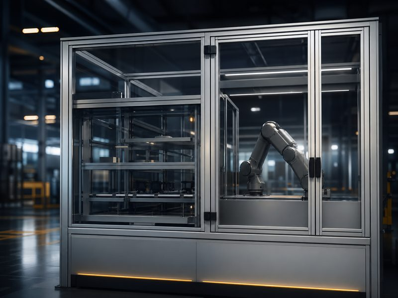
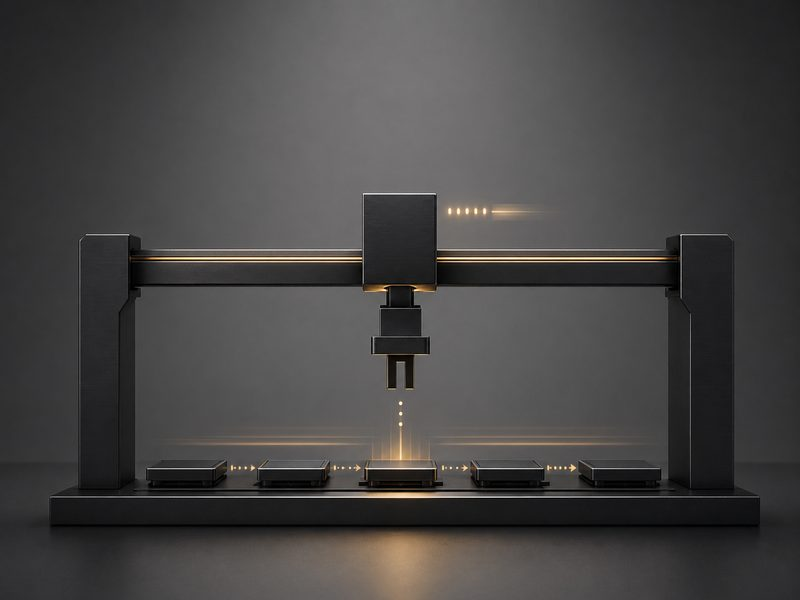
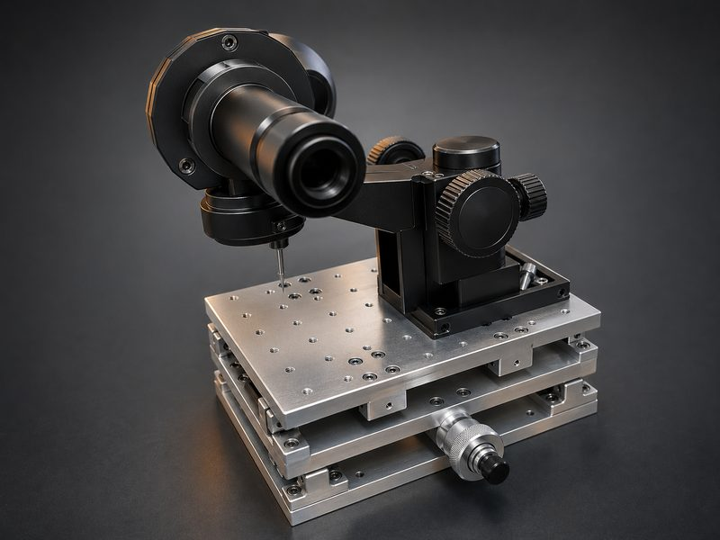
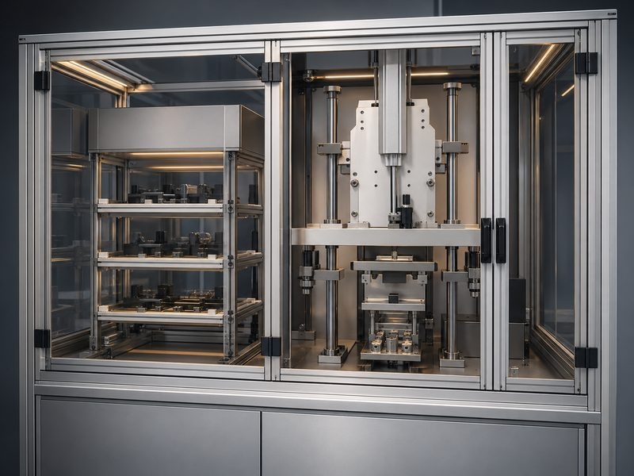

Projects
Case Studies in Practical Mechanical Engineering
Selected projects across machines, fixtures, inspection systems, and production equipment. Client names and proprietary details are withheld for confidentiality; the engineering problems and outcomes are real.
Machine Prototypes
Production Machine Architecture: 49 Motors to 4
A machine concept as first drafted required 49 motors — expensive to build, wire, program, and keep running.
The problem: The original architecture assigned an actuator to every motion. Cost and complexity made the machine unbuildable within budget, and every added motor was a future failure point.
Constraints: The machine still had to perform every required motion, meet cycle time, and remain safe and accessible for operators.
Approach: Rethought the mechanical architecture: shared drives, cam and linkage mechanisms, and mechanical synchronization replaced individually actuated axes wherever a motion did not truly need independent control.
Deliverables: Architecture study, concept layouts, 3D CAD, and engineering drawings for the revised design.
Outcome: The same machine functions delivered with 4 motors instead of 49 — lower build cost, simpler controls, less wiring, and fewer failure points.

Production Equipment
Gantry Transfer System for Sequential Processing
A process required parts to move through a sequence of stations with controlled timing — beyond what manual transfer could sustain.
The problem: Manual transfer between stations limited throughput and introduced timing variation that affected process quality.
Constraints: The system had to fit above existing stations, allow full operator access for maintenance and cleaning, and use standard purchasable motion components.
Approach: Developed the mechanical architecture for an overhead gantry transfer system, selecting motion components for serviceability and designing end-effectors around the actual part geometry.
Deliverables: Mechanical architecture, equipment layout, 3D CAD, engineering drawings, and vendor coordination through build.
Outcome: Consistent station-to-station timing, higher throughput, and a system the client’s own technicians can maintain.

Inspection and Test Systems
Optical Inspection Positioning System
A manufacturer needed parts presented to an optical inspection station with consistent position and orientation — a step that had always been done by hand.
The problem: Manual staging varied by operator, producing inconsistent measurements and an inspection bottleneck that queued parts ahead of shipment.
Constraints: Existing optics and camera hardware had to stay. Floor space was fixed. Operators with no special training had to load and unload quickly.
Approach: Designed a positioning system that locates each part against repeatable datums, with loading motions built around operator reach and cycle time rather than added automation complexity.
Deliverables: Concept layout, 3D CAD, engineering drawings, and a fabrication-ready package for the client’s preferred shop.
Outcome: Repeatable part presentation, reduced handling time per part, and inspection results no longer dependent on which operator staged the part.

Fixtures and Workholding
Benchtop Production Station with Operator-Assist Fixturing
A hand-assembly step was slow, physically awkward, and produced results that varied from operator to operator.
The problem: The operation required holding, aligning, and joining components by hand. Manual effort was high and repeatability low.
Constraints: The station had to fit on an existing bench, need no plant utilities beyond standard power, and be usable within minutes of introduction.
Approach: Designed a benchtop station with self-locating workholding and poka-yoke features, sequencing the operator’s motions so the fixture — not technique — controls alignment.
Deliverables: Fixture concepts, 3D CAD, fabrication drawings, and an operator-flow review.
Outcome: Substantially reduced manual effort, consistent results across operators, and a station adopted on the floor without pushback.

Facing a similar problem?
Send a short description, photo, or drawing. EngineeringXYZ will review whether there is a practical way to help — starting with a small, defined scope.
Discuss a Current Project